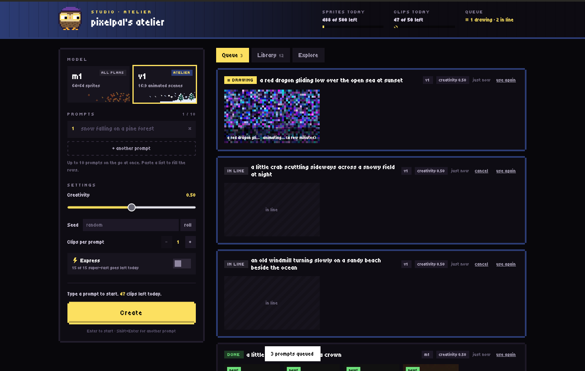
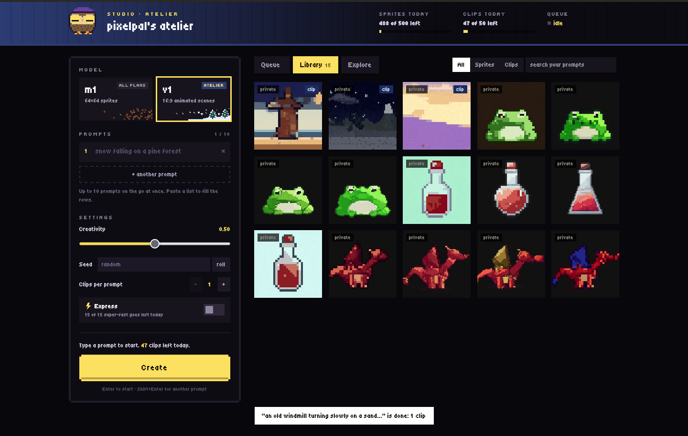
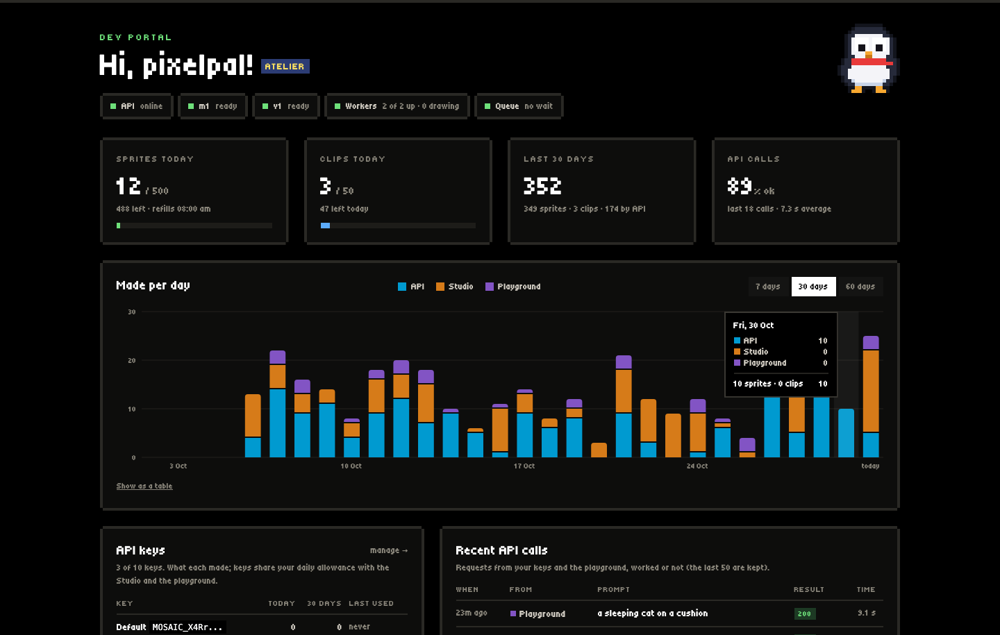
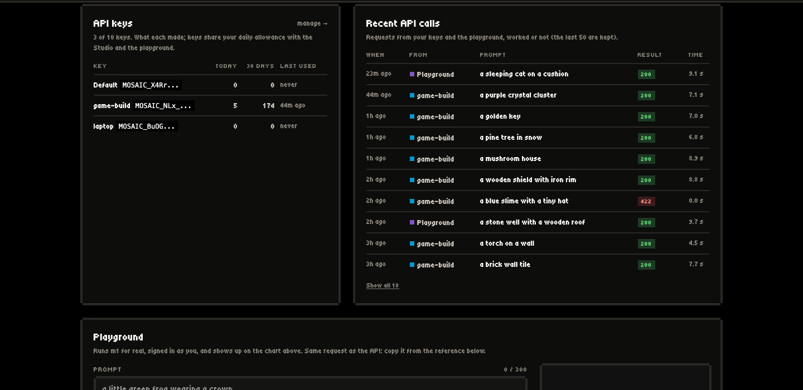

01A real workspace
Yesterday's pro Studio was the classic Studio with a new coat of paint and a few extra controls. We wanted more than that, so we rebuilt it from the ground up for Artisan and Atelier.
- The composer sits on the left and stays put: pick a model from its card, write your prompts, set creativity, a seed and how many you want of each.
- The queue fills the middle. Every prompt gets its own card that shows what's drawing, what's waiting its turn and what's done, and each sprite drops in the moment it's finished.
- The header wears your plan's colours and mascot (the fox in her apron, the owl in his beret) and keeps today's sprites, clips and the queue in view.
Your queue lives on our side, not in your tab. Reload the page, close the laptop, come back: whatever was drawing is still drawing, and it's all there when you return.
02Line up your prompts
On Atelier you no longer have to wait for one prompt to finish before starting the next. Write up to ten prompts, one per row (press Shift+Enter for a new row, or paste a list and each line becomes a prompt), and queue them all with one press. Keep writing while they draw: there's room for ten on the go at a time.
Each card has use again, to send its prompt back to the composer for another round, and cancel, which stops whatever hasn't started yet. You're only ever charged for what's actually made: anything cancelled or that fails along the way is handed straight back to today's allowance.
Queue a whole tileset, go make tea, come back to a finished batch.
A long queue never crowds anyone else out. Your prompts take turns with everyone's, so a free account making one sprite still gets its turn promptly while your thirty sprites work through.
03Clips in batches
v1 clips used to be strictly one at a time. On Atelier you can now ask for up to four clips per prompt, each on its own seed, and line up several scenes at once, just like sprites. Clips take a few minutes each, so they draw one after another and each appears as soon as it's ready.

04Your library
Everything you've made is one tab away. Filter to just sprites or just clips, or search your own prompts to find the frog you made last Tuesday. Open anything for the full-size view, downloads (PNG up to 16×, MP4 or GIF for clips) and sharing to the gallery. The community gallery is the third tab, Explore.

05The dev dashboard
If you call Mosaic from your own code, the dev portal used to tell you very little. Now it's a dashboard:
- Today at a glance: sprites and clips left, what you made in the last 30 days, and how many of your recent API calls worked.
- Made per day, for the last 7, 30 or 60 days, split into what came from the API, the Studio and the playground. Hover a day for its numbers, or open it as a table.
- Every key, with what it made today and this month, and when it was last used.
- Recent calls: your last requests with their prompt, result and time, so a script that's quietly hitting its limit or sending a bad field shows up right away.
- Live status of the API, m1, v1 and the queue, refreshed every 30 seconds.


The playground and the API reference are still there, underneath. Everything you run in the playground shows up on the chart too.
06Who gets what
Prefer the classic Studio? It's one switch away in your settings, and your plan's allowance and rights stay exactly the same. The full comparison is on the pricing page.